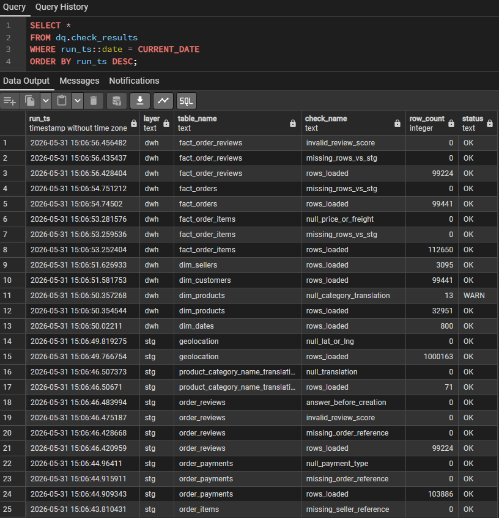
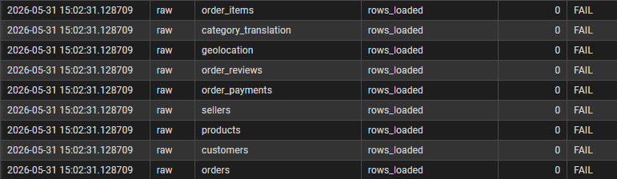
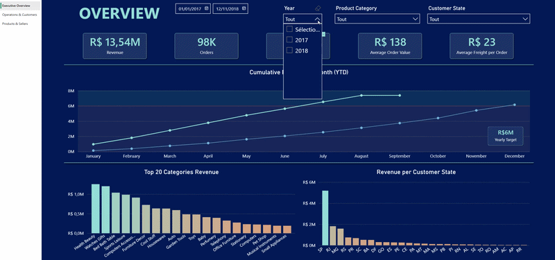

Introduction
Dans ce projet, j'ai souhaité construire un pipeline de données analytique de bout en bout à partir du dataset e-commerce brésilien Olist disponible sur Kaggle.
L'objectif n'était pas uniquement de créer un dashboard Power BI, mais de reproduire une architecture décisionnelle réaliste inspirée des pratiques de Data Engineering et de Business Intelligence utilisées en entreprise.
Le projet couvre l'ensemble de la chaîne analytique :
- Ingestion de fichiers CSV dans PostgreSQL
- Structuration des données en couches RAW / STG / DWH
- Mise en place de contrôles qualité
- Modélisation en étoile
- Création d'un dashboard Power BI interactif
- Développement de mesures DAX avancées
Retrouvez tous les fichiers associés à ce projet sur mon GitHub
Ce projet m'a permis de travailler plusieurs problématiques concrètes souvent rencontrées dans les projets BI :
- Gestion des types et du nettoyage de données
- Contrôle de la qualité des données
- Modélisation multi-facts
- Gestion du contexte de filtre dans DAX
- Création de mesures de time intelligence
- Optimisation du modèle Power BI
Architecture globale du pipeline
J'ai organisé le pipeline en plusieurs couches distinctes : RAW → STG → DWH → Power BI
Cette séparation permet d'isoler les données brutes, centraliser les traitements de nettoyage et construire un modèle analytique optimisé pour Power BI.
Le pipeline suit les étapes suivantes :
- Ingestion des fichiers CSV dans PostgreSQL
- Nettoyage et standardisation des données
- Construction du Data Warehouse
- Exploitation analytique dans Power BI
Construction du pipeline SQL
L'ensemble du pipeline a été construit dans PostgreSQL à l'aide de scripts SQL/PSQL organisés par étape.
Le pipeline peut être exécuté automatiquement via un script psql qui orchestre les différentes étapes dans le bon ordre.
Le projet commence par la création des différents schémas : raw, stg, dwh, dq (pour les contrôles qualité).
1). Couche RAW
Les fichiers CSV sont ensuite chargés dans la couche RAW via un script psql. Il est nécessaire de passer par un script psql, car j'utilise la commande \copy.
Exemple pour un fichier :
-- olist_orders_dataset.csv
TRUNCATE raw.orders;
\copy raw.orders FROM '../data/raw/olist_orders_dataset.csv' DELIMITER ',' CSV HEADERToutes les colonnes sont volontairement chargées en TEXT afin d'éviter les erreurs de typage lors de l'ingestion initiale. On force bien le format UTF8 (WIN1252 par défaut), avec \encoding UTF8 pour éviter des problèmes avec les caractères spéciaux du Portugais, surtout pour le fichier reviews.
Une fois les données chargées, plusieurs contrôles qualité simples sont exécutés :
- Vérification du nombre de lignes chargées
- Détection de clés nulles
- Détection de doublons
- Contrôle de valeurs invalides

Exemple en cas d'échec de chargement des CSV :
Exemples de vérifications :-- Des lignes ont-elles été chargées ?
INSERT INTO dq.check_results (layer, table_name, check_name, row_count, status)
SELECT
-- On ne renseigne pas run_ts, on laisse le default faire son travail
'raw' AS layer,
t.table_name,
'rows_loaded' AS check_name,
t.row_count::int AS row_count,
CASE WHEN t.row_count > 0 THEN 'OK' ELSE 'FAIL' END AS status
FROM (
SELECT 'orders' AS table_name, COUNT(*) AS row_count FROM raw.orders
UNION ALL SELECT 'order_items', COUNT(*) FROM raw.order_items
UNION ALL SELECT 'customers', COUNT(*) FROM raw.customers
UNION ALL SELECT 'products', COUNT(*) FROM raw.products
UNION ALL SELECT 'sellers', COUNT(*) FROM raw.sellers
UNION ALL SELECT 'order_payments', COUNT(*) FROM raw.order_payments
UNION ALL SELECT 'order_reviews', COUNT(*) FROM raw.order_reviews
UNION ALL SELECT 'geolocation', COUNT(*) FROM raw.geolocation
UNION ALL SELECT 'category_translation', COUNT(*) FROM raw.product_category_name_translation
) t;-- outliers review_score dans order_reviews
INSERT INTO dq.check_results (layer, table_name, check_name, row_count, status)
SELECT
'raw',
'order_reviews',
'invalid_review_score',
COUNT(*),
CASE WHEN COUNT(*) = 0 THEN 'OK' ELSE 'WARN' END
FROM raw.order_reviews
-- Ici on teste avec regex car au layer raw on est encore en TEXT
WHERE review_score !~ '^[1-5]$';La couche staging permet ensuite de nettoyer et standardiser les données avant leur intégration dans le Data Warehouse. C'est dans cette couche que sont réalisés :
- Typage des colonnes
- Conversion des dates
- Création de métriques
- Gestion des valeurs nulles
- Ajout des contraintes et clés primaires
-- lead_time_days : Commande -> Livraison
CASE
WHEN NULLIF(order_delivered_customer_date, '') IS NULL
OR NULLIF(order_purchase_timestamp, '') IS NULL
THEN NULL
ELSE
-- On traite les valeurs négatives.
CASE
WHEN (
NULLIF(order_delivered_customer_date, '')::date
- NULLIF(order_purchase_timestamp, '')::date
) < 0
THEN NULL
ELSE (
NULLIF(order_delivered_customer_date, '')::date
- NULLIF(order_purchase_timestamp, '')::date
)
END
ENDNULLIF(TRIM(review_score), '')::int-- Référence manquante vers orders
----------------------------------
INSERT INTO dq.check_results (layer, table_name, check_name, row_count, status)
SELECT
'stg' AS layer,
'order_reviews' AS table_name,
'missing_order_reference' AS check_name,
COUNT(*) AS row_count,
CASE WHEN COUNT(*) = 0 THEN 'OK' ELSE 'FAIL' END AS status
FROM stg.order_reviews r
LEFT JOIN stg.orders o
ON o.order_id = r.order_id
WHERE o.order_id IS NULL;La couche Data Warehouse a été modélisée selon une architecture en étoile afin d'optimiser les performances analytiques dans Power BI. Le modèle repose sur plusieurs dimensions (dim_dates, dim_products, dim_customers, etc.) reliées à plusieurs tables de faits (fact_orders, fact_order_items et fact_order_reviews)
Le choix d'un modèle multi-facts permet de séparer les différents niveaux de granularité métier :
- Commande
- Ligne de commande
- Avis client
product_key INT GENERATED ALWAYS AS IDENTITY PRIMARY KEYUne dimension calendrier (dim_dates) a également été construite afin de pouvoir gérer les analyses temporelles et les mesures de time intelligence dans Power BI. La table est générée dynamiquement à partir des dates présentes dans les tables métier :
-- ça permettra de relier les faits à une dimension date
-- plutôt que manipuler les timestamps bruts partout dans Power BI.
-- Grain : 1 ligne = 1 jour.
-- Clé : YYYYMMDD
CREATE TABLE dwh.dim_dates (
date_key INT PRIMARY KEY,
full_date DATE NOT NULL,
year INT NOT NULL,
iso_year INT NOT NULL,
quarter INT NOT NULL,
month INT NOT NULL,
day INT NOT NULL,
month_name TEXT NOT NULL,
day_of_week INT NOT NULL,
day_name TEXT NOT NULL,
iso_week_of_year INT NOT NULL,
is_weekend BOOLEAN NOT NULL
);
-- On récupère min/max date de nos différentes tables.
-- ça nous servira pour générer la series.
WITH bounds AS (
SELECT
MIN(date_value) AS min_date,
MAX(date_value) AS max_date
FROM (
SELECT purchase_ts::date AS date_value FROM stg.orders
UNION ALL
SELECT approved_ts::date FROM stg.orders
UNION ALL
SELECT delivered_carrier_ts::date FROM stg.orders
UNION ALL
SELECT delivered_customer_ts::date FROM stg.orders
UNION ALL
SELECT estimated_delivery_ts::date FROM stg.orders
UNION ALL
SELECT review_creation_ts::date FROM stg.order_reviews
) d
WHERE date_value IS NOT NULL
)
INSERT INTO dwh.dim_dates
SELECT
TO_CHAR(d::date,'YYYYMMDD')::int AS date_key,
d::date AS full_date,
-- année calendrier
EXTRACT(YEAR FROM d)::int AS year,
-- année ISO (pour cohérence avec semaine ISO)
EXTRACT(ISOYEAR FROM d)::int AS iso_year,
EXTRACT(QUARTER FROM d)::int AS quarter, -- Pas d'ISO pour quarter.
EXTRACT(MONTH FROM d)::int AS month,
EXTRACT(DAY FROM d)::int AS day,
TRIM(TO_CHAR(d,'Month')) AS month_name, -- TRIM car PostgreSQL padde les noms de mois
EXTRACT(ISODOW FROM d)::int AS day_of_week, -- ISODOW : Lundi=1 et Dimanche=7
TRIM(TO_CHAR(d,'Day')) AS day_name, -- TRIM, pareil pour les noms de jours
EXTRACT(WEEK FROM d)::int AS iso_week_of_year, -- Déjà ISO
CASE
WHEN EXTRACT(ISODOW FROM d) IN (6,7)
THEN TRUE
ELSE FALSE
END AS is_weekend
FROM bounds,
generate_series(bounds.min_date, bounds.max_date, interval '1 day') d;Power BI
Le dashboard Power BI a été construit directement à partir des tables du Data Warehouse PostgreSQL. L'objectif était de créer un modèle analytique relativement léger côté Power BI en limitant les transformations Power Query et en centralisant la logique métier dans PostgreSQL.Exemple de petit traitement au niveau de Power Query :
let
Source = PostgreSQL.Database("localhost", "olist_dwh"),
dwh_dim_products = Source{[
Schema = "dwh",
Item = "dim_products"
]}[Data],
// Cleaning des noms de produits
#"Majuscule à chaque mot" = Table.TransformColumns(
dwh_dim_products,
{
{
"product_category_name_english",
Text.Proper,
type text
}
}
),
#"Underscores remplacés par espaces" = Table.ReplaceValue(
#"Majuscule à chaque mot",
"_",
" ",
Replacer.ReplaceText,
{"product_category_name_english"}
)
in
#"Underscores remplacés par espaces"
Le dashboard contient trois pages principales :
a). Une vue exécutive orientée chiffre d'affaires et commandes
b). Une vue logistique et satisfaction client
c). Une vue produits et vendeurs
Le dashboard final permet ainsi de croiser plusieurs dimensions métier :- Performance commerciale
- Logistique
- Satisfaction client
- Performance produit et vendeurs

Une vidéo est également disponible ici.
Difficultés techniques rencontrées
Gestion des relations entre plusieurs tables de faits
Le modèle Power BI repose sur plusieurs tables de faits (fact_orders, fact_order_items, fact_order_reviews).
Cette approche est plus propre d'un point de vue analytique, mais elle complexifie certaines analyses croisées.
Par exemple, pour analyser la relation entre les délais de livraison et la satisfaction client, il fallait faire interagir :
- Les données logistiques provenant de fact_orders
- Les notes clients provenant de fact_order_reviews
Avg Review Score (via orders) =
// Relie dynamiquement fact_orders et fact_order_reviews via order_id
// pour calculer la note moyenne dans le contexte des délais de livraison
CALCULATE(
AVERAGE(fact_order_reviews[review_score]),
TREATAS(
VALUES(fact_orders[order_id]),
fact_order_reviews[order_id]
)
)Gestion des mesures YTD
La création des mesures de cumul annuel (YTD) a également soulevé plusieurs problématiques. L'utilisation directe de TOTALYTD fonctionnait correctement, mais les courbes cumulées continuaient après le dernier mois contenant réellement du chiffre d'affaires, créant un plateau artificiel sur les visualisations.
Pour résoudre ce problème, j'ai ajouté une logique conditionnelle permettant de retourner BLANK() après le dernier mois contenant du revenue réel. Cette gestion personnalisée permet d'obtenir des graphiques plus cohérents visuellement et plus justes analytiquement.
Revenue YTD =
VAR LastMonthWithRevenue =
// Calcule le dernier mois (YearMonthSort) où il y a du Revenue
// ALL(dim_dates) enlève les filtres (année, mois, slicers)
// pour obtenir une référence globale
CALCULATE(
MAX(dim_dates[YearMonthSort]),
FILTER(
ALL(dim_dates),
NOT ISBLANK([Revenue]) // garde uniquement les mois avec du revenue
)
)
VAR CurrentMonth =
// Mois courant dans le contexte du visuel (ex: le point affiché)
MAX(dim_dates[YearMonthSort])
RETURN
IF(
// Si on est après le dernier mois avec revenue
CurrentMonth > LastMonthWithRevenue,
// On renvoie BLANK() pour couper la courbe
BLANK(),
// Sinon, on calcule le cumul annuel classique
TOTALYTD(
[Revenue],
dim_dates[full_date]
)
)La gestion des analyses temporelles a nécessité la création d'une dimension calendrier dédiée (dim_dates). Cette table centralise :
- Informations calendaires classiques
- Semaines ISO
- Années ISO
- Indicateurs temporels utilisés dans Power BI
Séparation des responsabilités entre PostgreSQL et Power BI
Une autre difficulté importante concernait la répartition des traitements entre PostgreSQL et Power BI. J'ai volontairement choisi de :
- Centraliser le nettoyage et la logique métier dans PostgreSQL
- Limiter les transformations Power Query
- Conserver un modèle Power BI relativement léger
Conclusion
Ce projet m'a permis de travailler l'ensemble de la chaîne décisionnelle, depuis l'ingestion de données brutes jusqu'à la création d'un dashboard analytique dans Power BI.
Au-delà des aspects purement techniques, il m'a surtout permis de mieux comprendre plusieurs problématiques concrètes rencontrées dans les projets BI :
- Structuration d'un pipeline de données
- Séparation des couches de traitement
- Modélisation en étoile
- Gestion de plusieurs tables de faits
- Contrôle de la qualité des données
Enfin, ce travail m'a permis de pratiquer des problématiques de time intelligence et de DAX avancé dans un contexte relativement réaliste, avec plusieurs cas nécessitant des mesures personnalisées et une gestion fine du contexte de filtre.
Plusieurs pistes d'améliorations pourraient être envisagées pour aller plus loin :
- Automatisation du pipeline
- Ajout de tests de qualité plus avancés
- Orchestration avec dbt
- Déploiement cloud du Data Warehouse
- Traitement et utilisation des données GPS
Retrouvez tous les fichiers associés à ce projet sur mon GitHub